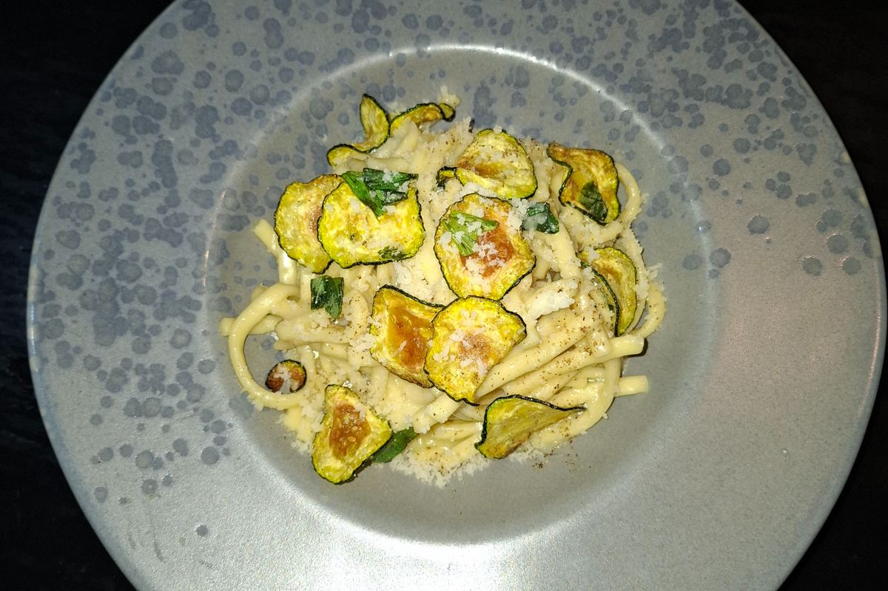
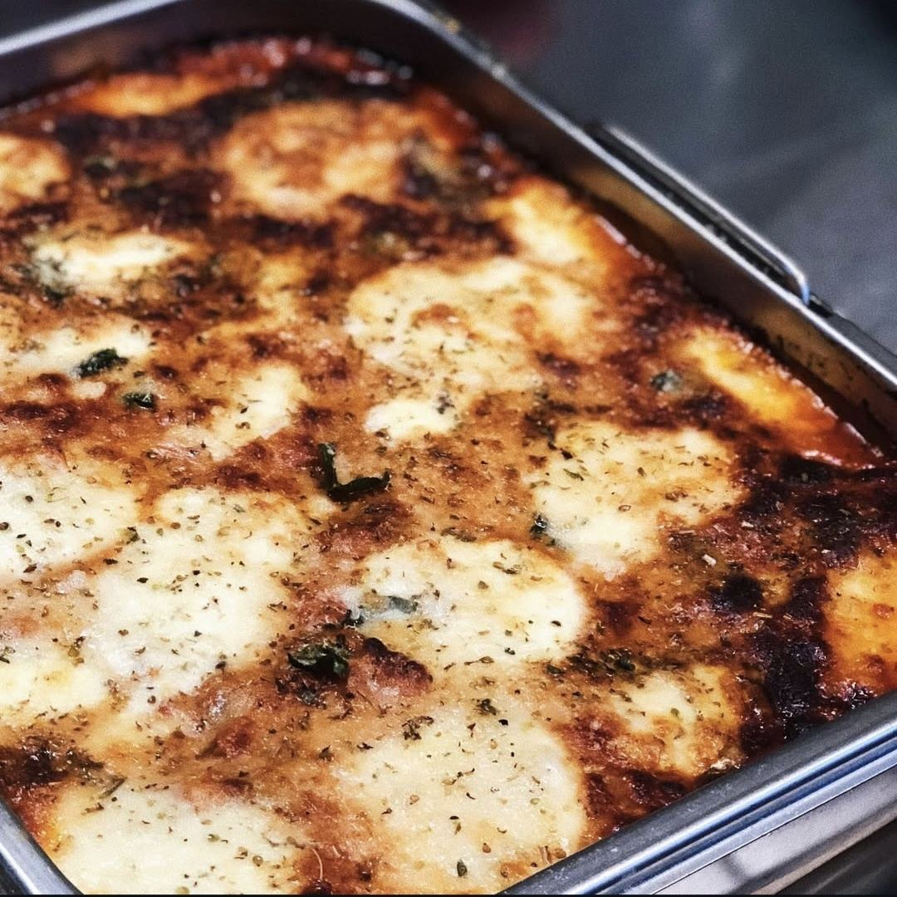

Pizzeria · Bistro · Ristorante
Siamo lieti di ospitarvi in questo piccolo angolo d'Italia per farvi assaporare il gusto della nostra terra. Dalla pasta alla tipica pizza napoletana, vi coccoleremo con gli inconfondibili sapori legati alla tradizione mediterranea, senza dimenticare le nostre specialità di carne e i nostri più sfiziosi dolci e gelati italiani.
Nella selezione dei nostri vini troverete inoltre una fusione fra aromi vallesani e italiani. Bellevue nasce dalla passione e dalla voglia di portare il nostro concetto di cucina italiana nell'Alto Vallese.
Wir freuen uns, Sie in dieser kleinen Ecke Italiens begrüssen zu dürfen. Von Pasta bis zur typischen neapolitanischen Pizza verwöhnen wir Sie mit den unverwechselbaren Aromen der mediterranen Tradition, ohne unsere Fleischspezialitäten und unsere italienischen Desserts und Glaces zu vergessen.
In unserer Weinauswahl treffen Walliser und italienische Aromen aufeinander. Das Bellevue entstand aus der Leidenschaft und dem Wunsch, unser Konzept der italienischen Küche ins Oberwallis zu bringen.


Preise in Franken
alle Pizzen auch klein, 3.– weniger
mit 2 Beilagen nach Wahl (ausser **)
° kann tiefgekühlt sein · frischer schwarzer Trüffel nach Verfügbarkeit · glutenfrei auf Anfrage
Dienstag ist Ruhetag. Saisonal kann es ändern, im Zweifel kurz anrufen.
Restaurant Pizzeria Bistro Bellevue
Furkastrasse 100
3994 Lax VS
50 Plätze drinnen, 25 auf der Terrasse. Alles auch zum Mitnehmen.